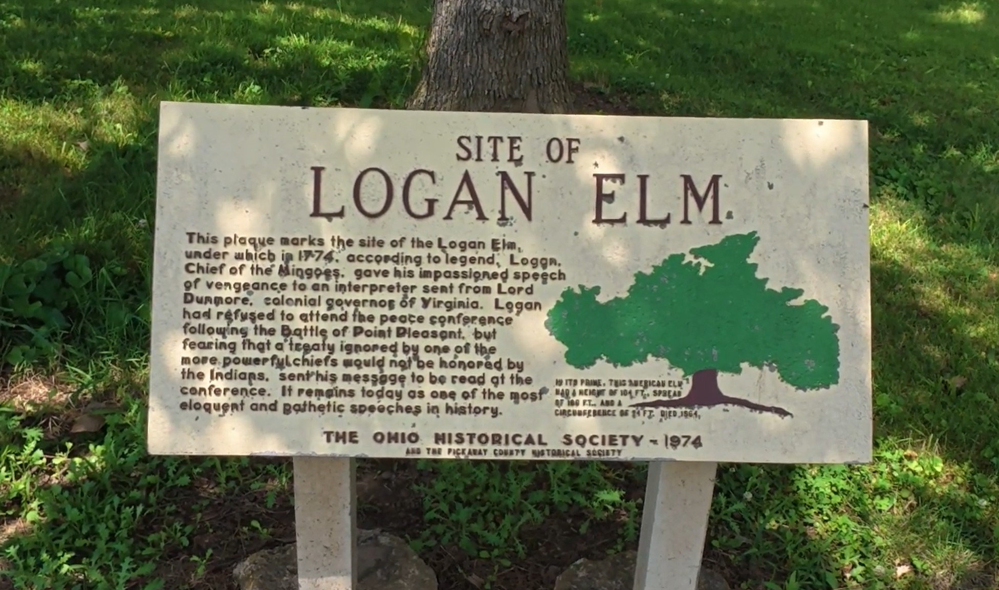

Logan Elm State Memorial
A peaceful park that preserves the memory of Chief Logan and one of Ohio's most enduring frontier stories.

Our Visit
Logan Elm State Memorial is one of those places that many people drive past without realizing the history connected to the land.
Walking through the park gave us an opportunity to reflect on the events that inspired Chief Logan's famous speech, often known as Logan's Lament.
Quiet places like this remind us that history isn't always found inside museums. Sometimes it waits beneath the shade of old trees along an ordinary road.
A Little History
Logan Elm State Memorial commemorates the site traditionally associated with Chief Logan of the Mingo Nation.
Although the original elm tree no longer stands, the park preserves the location where Logan is believed to have delivered the speech that became known as Logan's Lament, one of the best-known statements from America's frontier era.
Today the memorial serves as a quiet reminder of Ohio's Native American heritage and early frontier history.
Come Along With Us
Watch the Logan Elm State Memorial.
Nearby Discoveries
Logan Elm is located near Circleville and makes an easy stop while exploring Pickaway County and southern Ohio.
As GO-CA-TION grows, this page will connect with additional nearby parks, historic sites, and backroad discoveries.